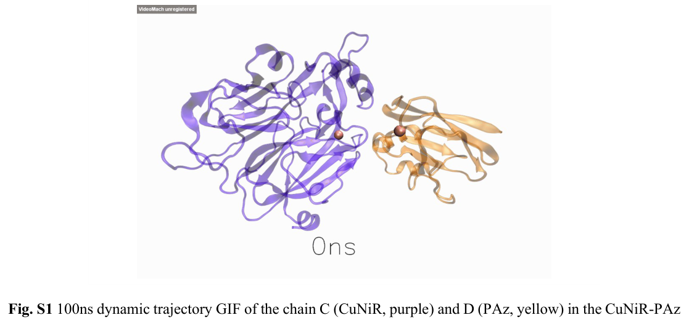

nirK1 encodes a predicted periplasmic copper-containing nitrite reductase in Rhodopseudomonas palustris CGA009. The UniProt record names the protein as a copper-containing nitrite reductase with EC 1.7.2.1, supporting its role in the nitrite-to-nitric-oxide step of nitrogen oxide respiration.
| GO Term | Evidence | Action | Reason |
|---|---|---|---|
|
GO:0005507
copper ion binding
|
IEA
GO_REF:0000002 |
ACCEPT |
Summary: ACCEPT. Copper binding is consistent with the annotated copper-containing nitrite reductase family and catalytic activity.
Reason: nirK1 is annotated as a copper-containing nitrite reductase and has cupredoxin/NO2-reductase_Cu family signatures plus conserved copper-site features. The inference is family/domain based, not direct biochemical evidence in this strain. Falcon found no primary paper characterizing Q6N4N1/RPA3306 directly.
Supporting Evidence:
file:RHOPA/nirK1/nirK1-uniprot.txt
InterPro; IPR001287; NO2-reductase_Cu.
file:RHOPA/nirK1/nirK1-deep-research-falcon.md
The report supports T1Cu/T2Cu CuNIR architecture from family evidence and did not recover nirK1/RPA3306-specific metal biochemistry.
|
|
GO:0042597
periplasmic space
|
IEA
GO_REF:0000044 |
ACCEPT |
Summary: ACCEPT. Bacterial NirK enzymes are periplasmic nitrite reductases, and the UniProt record identifies this protein as a precursor.
Reason: The UniProt record predicts periplasmic localization and an N-terminal signal peptide. This matches the expected compartment for bacterial copper nitrite reductases.
Supporting Evidence:
file:RHOPA/nirK1/nirK1-uniprot.txt
SUBCELLULAR LOCATION: Periplasm.
file:RHOPA/nirK1/nirK1-uniprot.txt
SIGNAL 1..26
|
|
GO:0050421
nitrite reductase (NO-forming) activity
|
IEA
GO_REF:0000120 |
ACCEPT |
Summary: ACCEPT. This is the specific molecular function expected for copper nitrite reductase EC 1.7.2.1.
Reason: This is the precise EC-supported activity for a NirK copper nitrite reductase. UniProt assigns EC 1.7.2.1 and the NO2-reductase_Cu/TIGR02376 family model supports conserved NO-forming nitrite reductase function. Falcon adds that no direct RPA3306 enzyme assay was recovered, so the support remains conserved-function inference.
Supporting Evidence:
file:RHOPA/nirK1/nirK1-uniprot.txt
RecName: Full=Copper-containing nitrite reductase; EC=1.7.2.1.
file:RHOPA/nirK1/nirK1-uniprot.txt
NCBIfam; TIGR02376; Cu_nitrite_red; 1.
file:RHOPA/nirK1/nirK1-deep-research-falcon.md
NirK/CuNIR family evidence supports nitrite-to-NO reduction with electron transfer from T1Cu to the T2Cu catalytic site.
|
|
GO:0019333
denitrification pathway
|
IEA
GO_REF:0000041 |
ACCEPT |
Summary: ACCEPT. UniPathway provides useful pathway context: nirK1 catalyzes the NO-forming nitrite-reduction step within bacterial denitrification.
Reason: The pathway annotation follows directly from the enzyme assignment: NO-forming nitrite reduction is step 2/4 in nitrate reduction (denitrification). This is a conserved-function inference from EC/family evidence and UniProt pathway mapping rather than a strain-specific experiment. Falcon found genome-context evidence for nirK with norB/nosZ in CGA009, but not direct nirK1-specific physiology.
Supporting Evidence:
file:RHOPA/nirK1/nirK1-uniprot.txt
PATHWAY: Nitrogen metabolism; nitrate reduction (denitrification); dinitrogen from nitrate: step 2/4.
file:RHOPA/nirK1/nirK1-deep-research-falcon.md
Comparative denitrification-genome analysis includes R. palustris CGA009 among nirK-harboring genomes and maps nirK relative to norB and nosZ, supporting pathway context without direct nirK1 biochemistry.
|
The research report should be a detailed narrative explaining the function, biological processes, and localization of the gene product. Citations should be given for all claims.
You should prioritize authoritative reviews and primary scientific literature when conducting research. You can supplement
this with annotations you find in gene/protein databases, but these can be outdated or inaccurate.
We are specifically interested in the primary function of the gene - for enzymes, what reaction is catalyzed, and what is the substrate specificity? For transporters, what is the substrate? For structural proteins or adapters, what is the broader structural role? For signaling molecules, what is the role in the pathway.
We are interested in where in or outside the cell the gene product carries out its function.
We are also interested in the signaling or biochemical pathways in which the gene functions. We are less interested in broad pleiotropic effects, except where these elucidate the precise role.
Include evidence where possible. We are interested in both experimental evidence as well as inference from structure, evolution, or bioinformatic analysis. Precise studies should be prioritized over high-throughput, where available.
Target to annotate (per user/UniProt): UniProt accession Q6N4N1, gene nirK1 (synonym nirK) from Rhodopseudomonas palustris (strain ATCC BAA-98 / CGA009), described as copper-containing nitrite reductase (EC 1.7.2.1) belonging to a multicopper oxidase/cupredoxin family (user-provided target context).
Critical limitation (important for correctness): Using the available tool-based literature retrieval, I did not obtain a primary paper that explicitly names Q6N4N1 or RPA3306 and characterizes this exact protein experimentally in R. palustris CGA009 (e.g., enzyme purification/kinetics, knockout phenotype, expression profiling). Accordingly, organism-specific statements below are restricted to the limited genomic-context evidence retrieved for R. palustris CGA009 in comparative denitrification analyses, while detailed mechanistic/cellular inferences are drawn from authoritative NirK (Cu-NIR) literature and clearly framed as family-level inference rather than strain-specific demonstration. (jones2008phylogeneticanalysisof pages 9-10, cua2010expressionofgenes pages 37-42)
Denitrification is a respiratory pathway in which microbes reduce oxidized nitrogen species through a series of steps: NO3− → NO2− → NO → N2O → N2, each catalyzed by a dedicated reductase. (cua2010expressionofgenes pages 32-37)
Within this sequence, nitrite reductase (Nir) catalyzes the reduction of nitrite (NO2−) to nitric oxide (NO). Two structurally unrelated enzyme classes carry out this same in vivo step: (i) copper-containing nitrite reductase (Cu-NIR; usually encoded by nirK) and (ii) cytochrome cd1 nitrite reductase (cd1-NIR; encoded by nirS). These enzyme classes are described as evolutionarily unrelated yet functionally interchangeable in vivo, and typically not both present in the same bacterial species. (cua2010expressionofgenes pages 32-37, cua2010expressionofgenes pages 37-42, hayatsu2008variousplayersin pages 2-3)
Copper nitrite reductases (NirK/Cu-NIR) are described as catalyzing NO2− → NO as the denitrifying nitrite reduction step. (cua2010expressionofgenes pages 32-37, cua2010expressionofgenes pages 37-42)
Mechanistically, NirK has been summarized as performing a one-electron reduction of nitrite coupled to proton transfer (i.e., electron transfer is coupled to protonation steps at/near the catalytic copper center). In this framework, the electron is delivered from physiological electron donors—commonly small redox proteins—to an internal electron-transfer copper site, and then to the catalytic site. (cuasapud2025roldeligandos pages 22-26)
Overall architecture: Cu-NIR enzymes are described as periplasmic and typically trimeric, composed of three identical subunits (monomers). (cua2010expressionofgenes pages 37-42)
Copper centers: Each monomer contains two copper ions organized into a Type 1 (T1) copper site and a Type 2 (T2) copper site. (cua2010expressionofgenes pages 37-42, cuasapud2025roldeligandos pages 19-22)
Intramolecular electron transfer: The accepted electron flow is commonly summarized as physiological donor → T1 → T2. (cuasapud2025roldeligandos pages 22-26)
A structural summary describes the T1 and T2 copper centers as separated by roughly ~12.6 Å, and connected by electron-transfer pathways including a short Cys–His bridge and a longer route sometimes described as a “sensing loop” that may help gate electron delivery in response to substrate binding. (cuasapud2025roldeligandos pages 19-22)
Physiological electron donors for NirK are reported to include small copper proteins (e.g., pseudoazurin or azurin-like cupredoxins) and, in some systems, c-type cytochromes. (cuasapud2025roldeligandos pages 22-26, cuasapud2025roldeligandos pages 90-93)
A mechanistic description specifically identifies pseudoazurin as the donor for a Sinorhizobium meliloti NirK system and presents a general donor→T1→T2 framework. (cuasapud2025roldeligandos pages 22-26)
Cu-NIR is explicitly described as a periplasmic enzyme in bacteria. (cua2010expressionofgenes pages 37-42)
Therefore, for the R. palustris CGA009 nirK1/Q6N4N1 protein, the most defensible current localization statement (without strain-specific experimental localization data in hand) is periplasmic nitrite reduction, with electrons arriving via periplasmic redox partners (cupredoxins and/or cytochrome c proteins), consistent with the NirK family. (cua2010expressionofgenes pages 37-42, cuasapud2025roldeligandos pages 22-26)
Direct functional/biochemical characterization of nirK1 (Q6N4N1/RPA3306) in R. palustris CGA009 was not retrieved. However, a comparative phylogenetic/genomic analysis of denitrification enzymes includes Rhodopseudomonas palustris CGA-009 among nirK-harboring genomes, and presents a chromosome map comparing the relative positions of nirK, norB, and nosZ in Bradyrhizobium japonicum USDA 110, R. palustris CGA-009, and Brucella abortus. This supports that R. palustris CGA009 carries nirK within a broader denitrification gene context (nirK–norB–nosZ). (jones2008phylogeneticanalysisof pages 9-10)
Interpretation for annotation: The Jones et al. genome-map evidence supports that R. palustris CGA009 encodes a denitrification-like gene set including nirK, which is consistent with UniProt’s assignment of nirK1/Q6N4N1 as copper-containing nitrite reductase (EC 1.7.2.1). It does not specify whether nirK1 is the only nirK gene nor does it provide strain-specific enzyme properties. (jones2008phylogeneticanalysisof pages 9-10)
A 2023 study used molecular dynamics and quantum mechanical analysis to investigate interaction and electron transfer between a copper-containing nitrite reductase (CuNiR; NirK-family enzyme) and its redox partner pseudoazurin. The supporting information references a crystal structure model (PDB 2P80) and reports that the distance between the two T1 copper centers in the CuNiR–pseudoazurin system was 15.2 Å in a simulation snapshot versus 18.4 Å in the referenced crystal structure comparison, suggesting relatively stable complex geometry while highlighting conformational variability relevant to electron transfer. (li2023amoleculardynamics pages 1-5)
Relevance to nirK1 annotation: This informs current understanding that NirK function depends not only on active-site chemistry but also on protein–protein docking geometry with periplasmic redox partners, which affects electron transfer efficiency. This strengthens the inference that identifying plausible R. palustris periplasmic donor proteins (e.g., pseudoazurin/azurin/cytochrome c) is biologically important for pathway-level annotation of nirK1. (li2023amoleculardynamics pages 1-5, cuasapud2025roldeligandos pages 90-93)
A 2024 research thesis on AniA (a copper-dependent nitrite reductase in Neisseria gonorrhoeae) emphasizes enzyme metallation and assembly. It states that the active protein is a homotrimer containing three T1Cu and three T2Cu sites, and reports experimental observations consistent with T1Cu loading before T2Cu loading. It further suggests copper loading may occur through a two-stage process: formation of an initial “green” T1 copper center followed by an intramolecular transition to the final “blue” T1 copper center. (richards2024cuinsertioninto pages 1-8)
Relevance to nirK1 annotation: Although AniA is not from R. palustris, these findings illustrate a modern research focus on metallochaperones/copper trafficking and cofactor maturation, which can be critical determinants of NirK activity in vivo and potential regulatory bottlenecks (e.g., copper availability, periplasmic copper homeostasis). (richards2024cuinsertioninto pages 1-8)
A mechanistic summary reports that catalysis involves displacement of an apical water ligand and binding of nitrite at the T2 copper site, with electron transfer T1→T2 triggered by substrate binding and mediated by internal pathways including the Cys–His bridge and a sensing loop. (cuasapud2025roldeligandos pages 22-26, cuasapud2025roldeligandos pages 19-22)
A second-sphere residue often denoted AspCAT is described as critical for nitrite binding/protonation, with mutagenesis reducing activity to <2% of wild type in one NirK system—supporting a major catalytic role for proton delivery/active-site organization rather than merely structural stabilization. (cuasapud2025roldeligandos pages 22-26)
A NirK structural/spectroscopic overview reports that blue-copper T1 centers display a strong optical band near 600 nm with an extinction coefficient on the order of 3–6 mM−1 cm−1, and notes characteristic EPR features (including relatively small A∥ values linked to Cu–S(Cys) bonding). (cuasapud2025roldeligandos pages 22-26)
These signatures provide practical criteria for experimentally validating that R. palustris NirK1 is correctly folded/metallated if purified or studied spectroscopically in future work. (cuasapud2025roldeligandos pages 22-26)
nirK is widely used as a functional marker gene for denitrifier community analysis. Reviews emphasize that Cu-Nir (nirK) and cd1-Nir (nirS) represent two alternative nitrite-reduction solutions, and that molecular ecological approaches use these genes to track denitrification potential and community composition across ecosystems. (hayatsu2008variousplayersin pages 2-3)
Denitrification is routinely described as a key biological process for nitrogen removal in engineered systems. While the retrieved sources here are not R. palustris-specific engineering studies, the denitrification pathway framing (including NirK as the nitrite→NO step) is foundational for designing and diagnosing microbial nitrogen removal (e.g., controlling electron donors, oxygen levels, copper availability). (cua2010expressionofgenes pages 32-37, cua2010expressionofgenes pages 37-42)
nirK1 (UniProt Q6N4N1) in Rhodopseudomonas palustris CGA009 is best annotated (given UniProt identity and strong family-level evidence) as a periplasmic copper-containing nitrite reductase (NirK; EC 1.7.2.1) catalyzing NO2− → NO as part of denitrification, using Type 1 and Type 2 copper centers for electron transfer and catalysis, with electrons likely supplied by a periplasmic redox partner such as a pseudoazurin/azurin-like cupredoxin and/or c-type cytochrome. (cua2010expressionofgenes pages 37-42, cuasapud2025roldeligandos pages 22-26, cuasapud2025roldeligandos pages 90-93)
Comparative genomics places R. palustris CGA009 among nirK-harboring genomes and maps nirK in relation to norB and nosZ, supporting a denitrification gene context in this strain that is consistent with a functional role for NirK-type nitrite reduction. (jones2008phylogeneticanalysisof pages 9-10)
The periplasmic location is strongly supported for Cu-NIR enzymes in general; in the absence of a retrieved R. palustris nirK1-specific localization study, this is a high-confidence family-level inference rather than a strain-specific experimental claim. (cua2010expressionofgenes pages 37-42)
A 2023 CuNiR–pseudoazurin study provides structural visualizations of the CuNiR–PAz complex and a quantum-mechanical modeling schematic highlighting the T1 copper coordination environment (e.g., histidine/cysteine/methionine ligation at T1Cu) and the ET-relevant geometry. (li2023amoleculardynamics media e789f8c4, li2023amoleculardynamics media b5f7d315)
| Annotation item | What is currently supported | Key evidence/notes | Primary source (with year, DOI/URL if present in excerpts) |
|---|---|---|---|
| Target identity / ambiguity check | The requested target is nirK1 / Q6N4N1 / RPA3306 from Rhodopseudomonas palustris CGA009, annotated in UniProt as a copper-containing nitrite reductase (EC 1.7.2.1). However, direct organism-specific primary literature for RPA3306/Q6N4N1 was not retrieved here, so functional claims below are supported mainly by general NirK literature plus limited genome-level mentions for R. palustris CGA009. | Important to avoid conflating this protein with unrelated nirK genes from other organisms. Current support is strongest for family-level annotation, not a strain-specific biochemical characterization. | User-provided UniProt target definition; genome-level mention for R. palustris CGA009 in denitrification phylogeny/genome map study (jones2008phylogeneticanalysisof pages 9-10) |
| Primary enzymatic function | NirK is supported as the nitrite reductase of denitrification, catalyzing NO2− → NO. | Multiple sources agree that Cu-Nir/NirK performs the nitrite-to-nitric oxide step and is functionally equivalent in vivo to NirS/cd1 nitrite reductase, though structurally unrelated (cua2010expressionofgenes pages 37-42, cua2010expressionofgenes pages 32-37, hayatsu2008variousplayersin pages 2-3, hayatsu2008variousplayersin pages 1-2). | Cua 2010, no DOI shown in excerpt (cua2010expressionofgenes pages 37-42, cua2010expressionofgenes pages 32-37); Hayatsu et al. 2008, DOI: https://doi.org/10.1111/j.1747-0765.2007.00195.x (hayatsu2008variousplayersin pages 2-3, hayatsu2008variousplayersin pages 1-2) |
| Reaction chemistry / substrate specificity | Current understanding supports one-electron reduction of nitrite coupled to proton transfer, with nitrite as the physiological substrate and NO as product. | A mechanistic summary notes electron transfer from physiological donors to T1 Cu, then to catalytic T2 Cu, with protonation steps involving catalytic second-sphere residues; nitrite binding occurs at T2 after displacement of an apical water ligand (cuasapud2025roldeligandos pages 22-26, cuasapud2025roldeligandos pages 19-22). | Cuasapud 2025 thesis/excerpt, no DOI shown (cuasapud2025roldeligandos pages 22-26, cuasapud2025roldeligandos pages 19-22) |
| Cofactors / metal centers | NirK is supported as a copper enzyme with two distinct Cu centers per monomer: Type 1 Cu (electron-transfer site) and Type 2 Cu (catalytic/substrate-binding site). | Cu-Nir is described as a trimer; each subunit carries T1 and T2 Cu. T2 is the substrate-binding/catalytic center; T1 provides intramolecular electron transfer to T2 (cua2010expressionofgenes pages 37-42, cuasapud2025roldeligandos pages 19-22). | Cua 2010, no DOI shown in excerpt (cua2010expressionofgenes pages 37-42); Cuasapud 2025, no DOI shown (cuasapud2025roldeligandos pages 19-22) |
| Structural organization | The common NirK architecture is a homotrimer with mostly two-domain ~40 kDa subunits; some NirKs include an extra redox-related domain. | One source reports mostly homotrimeric, two-domain enzymes with monomers of ~40 kDa; another describes periplasmic trimeric proteins of three identical subunits (cuasapud2025roldeligandos pages 19-22, cua2010expressionofgenes pages 37-42). | Cuasapud 2025, no DOI shown (cuasapud2025roldeligandos pages 19-22); Cua 2010, no DOI shown (cua2010expressionofgenes pages 37-42) |
| Key catalytic residues / copper coordination | T1 Cu is currently supported as coordinated by 2 His + Cys + Met; T2 Cu is coordinated by 3 His plus an apical water in the resting state. | A detailed structural summary notes T1 distorted tetrahedral coordination and T2 coordination by three histidines, including one from a neighboring subunit; catalytic outer-sphere residues such as AspCAT/HisCAT/IleCAT are implicated in nitrite binding/protonation (cuasapud2025roldeligandos pages 19-22). | Cuasapud 2025, no DOI shown (cuasapud2025roldeligandos pages 19-22) |
| Intramolecular electron transfer | Electron flow is currently supported as physiological donor → T1 Cu → T2 Cu. | Structural summaries describe a short Cys–His bridge and a longer sensing loop pathway between T1 and T2 Cu; nitrite binding at T2 is linked to gated electron transfer (cuasapud2025roldeligandos pages 22-26, cuasapud2025roldeligandos pages 19-22). | Cuasapud 2025, no DOI shown (cuasapud2025roldeligandos pages 22-26, cuasapud2025roldeligandos pages 19-22) |
| Physiological electron donors | NirK commonly receives electrons from small cupredoxins such as pseudoazurin/azurin, and in some systems from cytochrome c proteins. | Evidence includes explicit mention of pseudoazurin as donor in Sinorhizobium meliloti NirK and broader references to azurin/pseudoazurin, cupredoxin-like mediators, and cytochrome c550/cytochrome c-linked systems (cuasapud2025roldeligandos pages 22-26, cuasapud2025roldeligandos pages 90-93). A 2023 computational study examined a CuNiR–pseudoazurin complex and highlighted intermolecular ET geometry, including T1Cu–T1Cu distances of 15.2 Å vs 18.4 Å in simulation/crystal comparison (li2023amoleculardynamics pages 1-5). | Cuasapud 2025, no DOI shown (cuasapud2025roldeligandos pages 22-26, cuasapud2025roldeligandos pages 90-93); Li & Zou 2023, DOI: https://doi.org/10.1039/d2cp05534a (li2023amoleculardynamics pages 1-5) |
| Cellular localization | NirK is generally supported as a periplasmic enzyme in bacteria. | A review/thesis source explicitly describes copper nitrite reductases as periplasmic enzymes; in Neisseria, the NirK homolog AniA is a specialized outer-membrane lipoprotein, showing that localization details can vary by lineage (cua2010expressionofgenes pages 37-42). | Cua 2010, no DOI shown in excerpt (cua2010expressionofgenes pages 37-42) |
| Spectroscopic / structural signatures | Blue copper T1 centers show characteristic optical and EPR properties. | Reported features include an intense band near 600 nm with extinction coefficients of about 3–6 mM−1 cm−1 and reduced hyperfine coupling at T1 Cu due to Cu–SCys bonding; T1–T2 Cu separation is reported as ~12.6 Å in one structural summary (cuasapud2025roldeligandos pages 22-26, cuasapud2025roldeligandos pages 19-22). | Cuasapud 2025, no DOI shown (cuasapud2025roldeligandos pages 22-26, cuasapud2025roldeligandos pages 19-22) |
| Mutagenesis / quantitative mechanistic evidence | Second-sphere catalytic residues strongly affect activity. | In one NirK system, mutation of catalytic AspCAT reduced activity to <2% of wild type, supporting a key role in nitrite binding/proton delivery and catalysis (cuasapud2025roldeligandos pages 22-26). | Cuasapud 2025, no DOI shown (cuasapud2025roldeligandos pages 22-26) |
| 2023–2024 research development | Recent work emphasizes electron-transfer interface mechanics and copper loading/assembly of NirK-family enzymes. | 2023 MD/QM study of CuNiR–pseudoazurin highlighted the ET role of interfacial residues and preserved T1Cu geometry/distances (li2023amoleculardynamics pages 1-5). A 2024 AniA study reported that apo-protein is problematic to purify, that the active protein is a homotrimer with 3 T1Cu + 3 T2Cu, and that copper loading appears to occur in two stages, with T1Cu loading before T2Cu and a transient green-to-blue T1Cu transition (richards2024cuinsertioninto pages 1-8). | Li & Zou 2023, DOI: https://doi.org/10.1039/d2cp05534a (li2023amoleculardynamics pages 1-5); Richards 2024 thesis, URL: https://etheses.durham.ac.uk/id/eprint/15725/ (richards2024cuinsertioninto pages 1-8) |
| Broad pathway context | NirK participates in the denitrification pathway between nitrate reduction and nitric oxide reduction. | Denitrification pathway summarized as NO3− → NO2− → NO → N2O → N2, with NirK catalyzing the second reductive step; this is the key biochemical pathway context for annotation (cua2010expressionofgenes pages 32-37, hayatsu2008variousplayersin pages 2-3). | Cua 2010, no DOI shown (cua2010expressionofgenes pages 32-37); Hayatsu et al. 2008, DOI: https://doi.org/10.1111/j.1747-0765.2007.00195.x (hayatsu2008variousplayersin pages 2-3) |
| Organism-specific note: R. palustris CGA009 | Evidence for this exact protein (Q6N4N1/RPA3306) is limited in the retrieved literature, but R. palustris CGA009 is included among nirK-harboring genomes in a denitrification phylogeny/genome comparison study. | Jones et al. present a genome map comparing nirK, norB, and nosZ positions in Bradyrhizobium japonicum USDA 110, Rhodopseudomonas palustris CGA-009, and Brucella abortus 9-941; this supports the presence of a denitrification gene set context in CGA009 but does not by itself resolve the biochemical properties of nirK1/RPA3306 (jones2008phylogeneticanalysisof pages 9-10). | Jones et al. 2008, DOI: https://doi.org/10.1093/molbev/msn146 ; URL in excerpt: https://academic.oup.com/mbe/article/25/9/1955/1302499 (jones2008phylogeneticanalysisof pages 9-10) |
| Practical annotation conclusion for Q6N4N1 | The most defensible current annotation is: periplasmic copper-containing nitrite reductase (NirK), multicopper oxidase family, denitrification enzyme reducing nitrite to NO via T1/T2 copper centers, likely using a small periplasmic redox partner such as pseudoazurin/azurin or cytochrome c. | This conclusion is strongly supported at the family/mechanism level but remains only indirectly supported for R. palustris CGA009 nirK1 in the absence of a retrieved strain-specific biochemical paper for Q6N4N1/RPA3306. | Synthesized from family-level evidence (cuasapud2025roldeligandos pages 22-26, cua2010expressionofgenes pages 37-42, cuasapud2025roldeligandos pages 19-22, jones2008phylogeneticanalysisof pages 9-10) |
Table: This table condenses the current evidence relevant to annotating nirK1/Q6N4N1 in Rhodopseudomonas palustris CGA009. It separates well-supported family-level NirK properties from the limited organism-specific evidence currently retrieved, including the Jones 2008 genome-map mention.
Because strain-specific experimental papers for Q6N4N1/RPA3306 were not retrieved here, the highest-value next steps to solidify annotation would be: (i) direct search of R. palustris CGA009 genome annotation resources for signal peptides and periplasmic targeting features; (ii) targeted literature retrieval using locus tag RPA3306 and protein accession Q6N4N1 in additional databases; (iii) biochemical confirmation (nitrite→NO activity, copper loading, 600 nm blue-copper band); and (iv) genetics (nirK1 disruption and denitrification phenotype under low-O2 + nitrite/nitrate conditions). These steps are suggested as methodology, not claimed outcomes.
References
(jones2008phylogeneticanalysisof pages 9-10): Christopher M. Jones, Blaž Stres, Magnus Rosenquist, and Sara Hallin. Phylogenetic analysis of nitrite, nitric oxide, and nitrous oxide respiratory enzymes reveal a complex evolutionary history for denitrification. Molecular biology and evolution, 25 9:1955-66, Sep 2008. URL: https://doi.org/10.1093/molbev/msn146, doi:10.1093/molbev/msn146. This article has 616 citations and is from a highest quality peer-reviewed journal.
(cua2010expressionofgenes pages 37-42): L Cua. Expression of genes linked to nox detoxification in aerobic bacteria. Unknown journal, 2010.
(cua2010expressionofgenes pages 32-37): L Cua. Expression of genes linked to nox detoxification in aerobic bacteria. Unknown journal, 2010.
(hayatsu2008variousplayersin pages 2-3): Masahito Hayatsu, Kanako Tago, and Masanori Saito. Various players in the nitrogen cycle: diversity and functions of the microorganisms involved in nitrification and denitrification. Soil Science and Plant Nutrition, 54:33-45, Feb 2008. URL: https://doi.org/10.1111/j.1747-0765.2007.00195.x, doi:10.1111/j.1747-0765.2007.00195.x. This article has 848 citations and is from a peer-reviewed journal.
(cuasapud2025roldeligandos pages 22-26): LA Guevara Cuasapud. Rol de ligandos de segunda y tercera esfera de coordinación del sitio activo de cobre en las propiedades redox y catalíticas de la nitrito reductasa de sinorhizobium …. Unknown journal, 2025.
(cuasapud2025roldeligandos pages 19-22): LA Guevara Cuasapud. Rol de ligandos de segunda y tercera esfera de coordinación del sitio activo de cobre en las propiedades redox y catalíticas de la nitrito reductasa de sinorhizobium …. Unknown journal, 2025.
(cuasapud2025roldeligandos pages 90-93): LA Guevara Cuasapud. Rol de ligandos de segunda y tercera esfera de coordinación del sitio activo de cobre en las propiedades redox y catalíticas de la nitrito reductasa de sinorhizobium …. Unknown journal, 2025.
(li2023amoleculardynamics pages 1-5): Xin Li and Hang Zou. A molecular dynamics and quantum mechanical investigation of intermolecular interaction and electron-transfer mechanism between copper-containing nitrite reductase and redox partner pseudoazurin. Physical chemistry chemical physics : PCCP, Mar 2023. URL: https://doi.org/10.1039/d2cp05534a, doi:10.1039/d2cp05534a. This article has 3 citations.
(richards2024cuinsertioninto pages 1-8): J Richards. Cu insertion into cu-dependent nitrite reductase ania from neisseria gonorrhoeae. Unknown journal, 2024.
(li2023amoleculardynamics media e789f8c4): Xin Li and Hang Zou. A molecular dynamics and quantum mechanical investigation of intermolecular interaction and electron-transfer mechanism between copper-containing nitrite reductase and redox partner pseudoazurin. Physical chemistry chemical physics : PCCP, Mar 2023. URL: https://doi.org/10.1039/d2cp05534a, doi:10.1039/d2cp05534a. This article has 3 citations.
(li2023amoleculardynamics media b5f7d315): Xin Li and Hang Zou. A molecular dynamics and quantum mechanical investigation of intermolecular interaction and electron-transfer mechanism between copper-containing nitrite reductase and redox partner pseudoazurin. Physical chemistry chemical physics : PCCP, Mar 2023. URL: https://doi.org/10.1039/d2cp05534a, doi:10.1039/d2cp05534a. This article has 3 citations.
(hayatsu2008variousplayersin pages 1-2): Masahito Hayatsu, Kanako Tago, and Masanori Saito. Various players in the nitrogen cycle: diversity and functions of the microorganisms involved in nitrification and denitrification. Soil Science and Plant Nutrition, 54:33-45, Feb 2008. URL: https://doi.org/10.1111/j.1747-0765.2007.00195.x, doi:10.1111/j.1747-0765.2007.00195.x. This article has 848 citations and is from a peer-reviewed journal.

id: Q6N4N1
gene_symbol: nirK1
product_type: PROTEIN
status: DRAFT
taxon:
id: NCBITaxon:258594
label: Rhodopseudomonas palustris (strain ATCC BAA-98 / CGA009)
description: >-
nirK1 encodes a predicted periplasmic copper-containing nitrite reductase in
Rhodopseudomonas palustris CGA009. The UniProt record names the protein as a
copper-containing nitrite reductase with EC 1.7.2.1, supporting its role in the
nitrite-to-nitric-oxide step of nitrogen oxide respiration.
existing_annotations:
- term:
id: GO:0005507
label: copper ion binding
evidence_type: IEA
original_reference_id: GO_REF:0000002
review:
summary: >-
ACCEPT. Copper binding is consistent with the annotated copper-containing
nitrite reductase family and catalytic activity.
action: ACCEPT
reason: >-
nirK1 is annotated as a copper-containing nitrite reductase and has
cupredoxin/NO2-reductase_Cu family signatures plus conserved copper-site
features. The inference is family/domain based, not direct biochemical
evidence in this strain. Falcon found no primary paper characterizing
Q6N4N1/RPA3306 directly.
supported_by:
- reference_id: file:RHOPA/nirK1/nirK1-uniprot.txt
supporting_text: InterPro; IPR001287; NO2-reductase_Cu.
- reference_id: file:RHOPA/nirK1/nirK1-deep-research-falcon.md
supporting_text: >-
The report supports T1Cu/T2Cu CuNIR architecture from family evidence
and did not recover nirK1/RPA3306-specific metal biochemistry.
- term:
id: GO:0042597
label: periplasmic space
evidence_type: IEA
original_reference_id: GO_REF:0000044
review:
summary: >-
ACCEPT. Bacterial NirK enzymes are periplasmic nitrite reductases, and the
UniProt record identifies this protein as a precursor.
action: ACCEPT
reason: >-
The UniProt record predicts periplasmic localization and an N-terminal
signal peptide. This matches the expected compartment for bacterial
copper nitrite reductases.
supported_by:
- reference_id: file:RHOPA/nirK1/nirK1-uniprot.txt
supporting_text: 'SUBCELLULAR LOCATION: Periplasm.'
- reference_id: file:RHOPA/nirK1/nirK1-uniprot.txt
supporting_text: SIGNAL 1..26
- term:
id: GO:0050421
label: nitrite reductase (NO-forming) activity
evidence_type: IEA
original_reference_id: GO_REF:0000120
review:
summary: >-
ACCEPT. This is the specific molecular function expected for copper
nitrite reductase EC 1.7.2.1.
action: ACCEPT
reason: >-
This is the precise EC-supported activity for a NirK copper nitrite
reductase. UniProt assigns EC 1.7.2.1 and the NO2-reductase_Cu/TIGR02376
family model supports conserved NO-forming nitrite reductase function.
Falcon adds that no direct RPA3306 enzyme assay was recovered, so the
support remains conserved-function inference.
supported_by:
- reference_id: file:RHOPA/nirK1/nirK1-uniprot.txt
supporting_text: 'RecName: Full=Copper-containing nitrite reductase; EC=1.7.2.1.'
- reference_id: file:RHOPA/nirK1/nirK1-uniprot.txt
supporting_text: NCBIfam; TIGR02376; Cu_nitrite_red; 1.
- reference_id: file:RHOPA/nirK1/nirK1-deep-research-falcon.md
supporting_text: >-
NirK/CuNIR family evidence supports nitrite-to-NO reduction with
electron transfer from T1Cu to the T2Cu catalytic site.
- term:
id: GO:0019333
label: denitrification pathway
evidence_type: IEA
original_reference_id: GO_REF:0000041
review:
summary: >-
ACCEPT. UniPathway provides useful pathway context: nirK1 catalyzes the
NO-forming nitrite-reduction step within bacterial denitrification.
action: ACCEPT
reason: >-
The pathway annotation follows directly from the enzyme assignment:
NO-forming nitrite reduction is step 2/4 in nitrate reduction
(denitrification). This is a conserved-function inference from EC/family
evidence and UniProt pathway mapping rather than a strain-specific
experiment. Falcon found genome-context evidence for nirK with norB/nosZ
in CGA009, but not direct nirK1-specific physiology.
supported_by:
- reference_id: file:RHOPA/nirK1/nirK1-uniprot.txt
supporting_text: 'PATHWAY: Nitrogen metabolism; nitrate reduction (denitrification); dinitrogen from nitrate: step 2/4.'
- reference_id: file:RHOPA/nirK1/nirK1-deep-research-falcon.md
supporting_text: >-
Comparative denitrification-genome analysis includes R. palustris
CGA009 among nirK-harboring genomes and maps nirK relative to norB and
nosZ, supporting pathway context without direct nirK1 biochemistry.
references:
- id: GO_REF:0000002
title: Gene Ontology annotation through association of InterPro records with GO terms
findings: []
- id: GO_REF:0000041
title: Gene Ontology annotation based on UniPathway vocabulary mapping
findings: []
- id: GO_REF:0000044
title: Gene Ontology annotation based on UniProtKB Subcellular Location vocabulary mapping
findings: []
- id: GO_REF:0000120
title: Combined Automated Annotation using Multiple IEA Methods
findings: []
- id: file:RHOPA/nirK1/nirK1-uniprot.txt
title: UniProt record for nirK1
findings:
- statement: >-
UniProt names Q6N4N1 as copper-containing nitrite reductase, EC 1.7.2.1.
- id: file:RHOPA/nirK1/nirK1-deep-research-falcon.md
title: Falcon deep research for nirK1
findings:
- statement: >-
Falcon deep research for nirK1 found no primary paper explicitly
characterizing Q6N4N1/RPA3306. It supports NO-forming CuNIR activity from
EC/domain evidence and places the gene in CGA009 denitrification-gene
context through comparative nirK/norB/nosZ analyses.
core_functions:
- description: >-
Catalyzes NO-forming nitrite reduction as a copper-containing periplasmic
enzyme in the denitrification pathway.
molecular_function:
id: GO:0050421
label: nitrite reductase (NO-forming) activity
directly_involved_in:
- id: GO:0019333
label: denitrification pathway
supported_by:
- reference_id: file:RHOPA/nirK1/nirK1-uniprot.txt
supporting_text: >-
RecName: Full=Copper-containing nitrite reductase; EC=1.7.2.1.
- reference_id: file:RHOPA/nirK1/nirK1-deep-research-falcon.md
supporting_text: >-
Falcon deep research supports that nirK1 should be accepted for
NO-forming nitrite reductase activity and denitrification pathway, with
evidence coming from conserved EC/domain/family inference plus CGA009
genome context rather than direct RPA3306-specific biochemistry.
{kind=link}